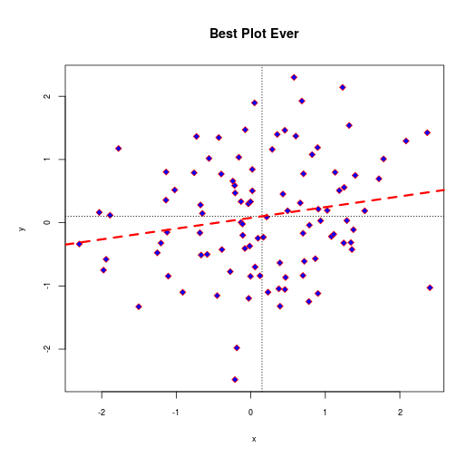

- Custom Functions
- Control Structures
for,while,if,ifelse
- Apply family
tapply,lapply
Jeremy Holden
for, while,if, ifelsetapply, lapplyFunction can be named or anonymous
mean)lapply)my.function<-function(x){cbind(xbar=mean(x),n=length(x))}
my.function(0:10)
## xbar n
## [1,] 5 11
We'll explore anonymous functions with the apply family.
If you need to do something more than once, save it as a function!
As big or as small as it needs to be.
se<-function(x){sd(x)/sqrt(length(x))}
se(rnorm(100))
## [1] 0.09161
se(rnorm(100, sd=10))
## [1] 1.1

There is a really good example of writing plot functions here: http://nicercode.github.io/
There are two ways of doing this:
source a *.R file with saved functionsWe'll focus on #1.
Done using source
FUN1(2)
## Error: could not find function "FUN1"
source('~/Tufts/StatsClass/customFUN1.R')
FUN1(2)
## [1] 5 8
Sometimes you want to build a generic function but set a common default value.
myfun<-function(x, y=5) {x*y}
myfun(5)
## [1] 25
myfun(5,2)
## [1] 10
Something created in a function only exists within a function unless you tell it to live outside the function in the Global Environment
<<- assigns a variable to the Global Environment
myfun<-function(){invis<-rnorm(100); print(mean(invis))}
myfun()
invis
myfun2<-function(){invis2<<-rnorm(100); print(mean(invis2))}
myfun()
invis2
A for loop repeats some instructions over a fixed length of time
for (placeholder in 1:5) {print (placeholder)}
## [1] 1
## [1] 2
## [1] 3
## [1] 4
## [1] 5
placeholder can be anything but the general convention uses i then j for nested loops.
while works similarly to for but instead of a fixed duration the loop operates as long as the condition is TRUE
x<-1
while(x < 5) {cat(x); x<-x+1}
## 1234
x
## [1] 5
It's possible to nest loops within each other although much more than 1 nested loop (loop within a loop) becomes difficult to write/interpret.
for (i in 1:5){
for (j in 6:10){
cat(paste(i*j, " "))
}
}
## 6 7 8 9 10 12 14 16 18 20 18 21 24 27 30 24 28 32 36 40 30 35 40 45 50
The placeholder can cylcle through elements of a vector
a<-letters[1:10]
for (i in a) {cat(i)}
## abcdefghij
Or be used as a counter; or both:
for (i in 1:10) {cat(paste(i, a[i], " ", sep=""))}
## 1a 2b 3c 4d 5e 6f 7g 8h 9i 10j
cat and print commands embedded in loops/functions can help with debugging.
debug, browser and trace are other debugging features in R if you want to explore.
Any repetive task can be incorporated in to a loop to condense code.
mydat<-read.csv('Tufts/StatsClass/lengthdata.csv')
spc<-unique(mydat$SPC)
spc<-spc[spc!=380]
par(mfrow=c(3,2), mar=c(5,4,1,1))
for (i in spc){
x<-mydat[mydat$SPC==i,]
boxplot(FLEN~SEX, x)
}
ifelse(condition, 'if true do this', 'otherwise do this')
x<-1:10
ifelse(x>5, x+1, x^2)
if & else can work in tandem in loops or functions, similar to above allows multiple commands within the if or else
for (i in x){
if (i%%2==0) {print(i^2)}
else {print(i/10)}
}
break and next can be used in a loop/function to stop or skip an iteration
for (i in x){
if (i%%2==0) {next}
else(cat(i))
}
for (i in x){
if (i^2>25) {break}
else(cat(i))
}
Apply family is a vectorized loop function. Generally it runs faster since loop is preformed in C.
mydf<-data.frame(x=rep(a, 1000), y=(rnorm(10000)))
system.time(for (i in a) {cat(mean(mydf$y[mydf$x==i]))})
system.time(cat(tapply(mydf$y, mydf$x, mean)))
mylist<-list(a=1:10, b=100:200, c=sample(100, 1:100), d=rnorm(100))
lapply(mylist, mean)
sapply(mylist, mean)
Time permitting: a quick look at what a custom package looks like
a. base plotting/ggplot/lattice
b. interactive plots (googleVis)/animation
c. reproducible documents (markdown, knitr, slidify)
d. suggestions?